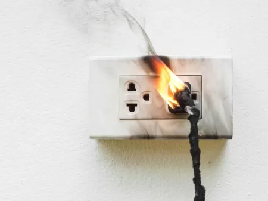

Sua família pode correr risco de vida com uma
instalação mal feita ou até com instalação antiga
Muitas vezes, o perigo está escondido por trás das paredes. Instalações elétricas antigas ou feitas com materiais de baixa qualidade sofrem um desgaste natural ao longo dos anos, resultando em fios desencapados e conexões frouxas. Esse cenário é o terreno perfeito para superaquecimentos silenciosos que, além de aumentarem drasticamente o consumo da sua conta de energia, colocam a estrutura do seu imóvel e a vida da sua família em risco iminente de incêndio.
O uso excessivo de adaptadores como 'benjamins' ou 'Ts' e a famosa cultura da gambiarra são as principais causas de curtos-circuitos e queima de eletrodomésticos. Uma tomada em curto é um aviso claro de que o sistema operando além do seu limite seguro. Não espere o pior acontecer para agir: uma revisão preventiva feita por um profissional qualificado garante a segurança de quem você ama e a estabilidade que o seu lar precisa.


